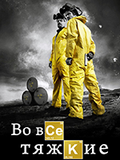

История о группе гиков, готовящих к запуску собственные стартапы в высокотехнологичном центре Сан-Франциско. Главные герои сериала бесплатно проживают в доме местного миллионера, но взамен им придётся отдать по 10% прибыли от будущих проектов.
История о группе гиков, готовящих к запуску собственные стартапы в высокотехнологичном центре Сан-Франциско. Главные герои сериала бесплатно проживают в доме местного миллионера, но взамен им придётся отдать по 10% прибыли от будущих проектов.
 Агентам ФБР Дане Скалли и Фоксу Малдеру поручают работу над проектом «Секретные материалы». Это архив нераскрытых дел, связанных с паранормальными явлениями. Малдер верит в пришельцев и пытается убедить скептика Скалли, что не всё поддаётся разумному объяснению.
Агентам ФБР Дане Скалли и Фоксу Малдеру поручают работу над проектом «Секретные материалы». Это архив нераскрытых дел, связанных с паранормальными явлениями. Малдер верит в пришельцев и пытается убедить скептика Скалли, что не всё поддаётся разумному объяснению.
 Сериал рассказывает историю жизни семьи шерифа после того, как «зомби» - эпидемия апокалиптических масштабов захлестнула земной шар. Шериф Рик Граймс путешествует со своей семьей и небольшой группой выживших в поисках безопасного места для жизни. Но постоянный страх смерти каждый день приносит тяжелые потери, заставляя героев почувствовать глубины человеческой жестокости.
Сериал рассказывает историю жизни семьи шерифа после того, как «зомби» - эпидемия апокалиптических масштабов захлестнула земной шар. Шериф Рик Граймс путешествует со своей семьей и небольшой группой выживших в поисках безопасного места для жизни. Но постоянный страх смерти каждый день приносит тяжелые потери, заставляя героев почувствовать глубины человеческой жестокости.

Школьный учитель химии Уолтер Уайт узнаёт, что болен раком лёгких. Учитывая сложное финансовое состояние дел семьи, а также перспективы, Уолтер решает заняться изготовлением метамфетамина. Для этого он привлекает своего бывшего ученика Джесси Пинкмана, когда-то исключённого из школы при активном содействии Уайта.
 В один из дней, в 1941-ом году, жизнь студента-физика переворачивается с ног на голову незадолго до весенней сессии. Гучкова Ивана замечает майор по фамилии Лобанов - начальник отдела Разведывательного управления. Спустя некоторое время, в ГРУ поступают сведения о секретных разработках американцев - атомном оружии. ГРУ вербует Ивана, а затем, отправляет в США
В один из дней, в 1941-ом году, жизнь студента-физика переворачивается с ног на голову незадолго до весенней сессии. Гучкова Ивана замечает майор по фамилии Лобанов - начальник отдела Разведывательного управления. Спустя некоторое время, в ГРУ поступают сведения о секретных разработках американцев - атомном оружии. ГРУ вербует Ивана, а затем, отправляет в США
 Ведьмак Геральт передвигается по Континенту, чтобы за звонкую монету освободить тот или иной край от всякой настырной нечисти. В одном из сёл девушка Йеннифэр, которой не повезло с внешностью при рождении, имеет недюжие способности к магии. Её отец отправляет её в ученицы колдуньи.
Ведьмак Геральт передвигается по Континенту, чтобы за звонкую монету освободить тот или иной край от всякой настырной нечисти. В одном из сёл девушка Йеннифэр, которой не повезло с внешностью при рождении, имеет недюжие способности к магии. Её отец отправляет её в ученицы колдуньи.
48 пассажиров, выживших после страшной авиакатастрофы, оказываются на тихоокеанском острове. Через несколько дней они понимают, что самолёт, скорее всего, считают погибшим и спасения ждать бессмысленно. Вскоре пассажиры обнаруживают, что это не просто остров, а странное, таинственное место
Специальные агенты ФБР, Фокс Малдер и Дана Скалли, снова работают вместе, чтобы расследовать странные и необъяснимые дела связанные с паранормальными явлениями.
Рассказ о приключениях известного исследователя Марко Поло в Поднебесной в XIII веке.